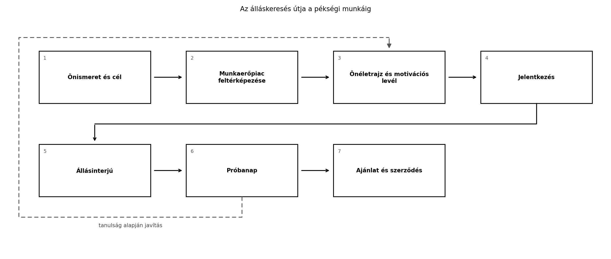

Bence megkapta a pék szakmai bizonyítványát. A tanpékségben jól dolgozott, de a városban három pékség hirdet állást, és mindegyik mást kér: az egyik önéletrajzot e-mailben, a másik próbanapot, a harmadik motivációs levelet és ajánlást. Bence barátja közben elvesztette a munkáját, mert a pékség bezárt, és nem tudja, hol kezdje az ügyintézést.
Ebben az alfejezetben végigmész az álláskeresés teljes útján: önismeret és célkitűzés, önéletrajz és motivációs levél, álláskeresési módszerek, állásinterjú és próbanap. Utána megnézed, mi a teendő, ha munkanélkülivé válsz: hogyan kell nyilvántartásba vetetni magad, milyen ellátás járhat, és milyen kötelezettségekkel jár. Az ellátás számítása a Foglalkoztatási formák, adók, járulékok és iratok alfejezetben tanult bruttó keresetre épül.

Az ábra fontos üzenete a visszacsatolás: egy elutasítás nem kudarc, hanem információ. Minden interjú után írd fel, mit kérdeztek, és mire nem tudtál jól válaszolni.
Definíció. Önismeret az álláskeresésben: annak tudatos számbavétele, mit tudsz (szakmai tudás, gyakorlat), mit szeretsz csinálni, milyen körülmények között tudsz dolgozni (éjszakai műszak, hétvége, utazás), és miben kell fejlődnöd.
Tegyél fel magadnak néhány kérdést:
Definíció. Helyi munkaerőpiac: egy földrajzi területen a munkát kínálók (pékségek, áruházláncok sütödéi, szállodák, ipari sütőüzemek) és a munkát keresők összessége. Mobilitás: a munkavállaló hajlandósága és lehetősége munkahelyváltásra, ingázásra vagy költözésre.
Példa. Egy kisvárosban két pékség és egy áruház-sütöde van; 30 km-re egy ipari sütőüzem három műszakban dolgozik. Ha vállalod az ingázást, több lehetőséged van, de számold bele az utazási időt és költséget a hajnali kezdéshez.
Definíció. Önéletrajz (CV): rövid, áttekinthető dokumentum a személyes adataidról, végzettségedről, szakmai tapasztalatodról és készségeidről. Europass önéletrajz: az Európai Unióban egységes szerkezetű, ingyenesen elkészíthető önéletrajz-formátum, amely több nyelven is kitölthető (ellenőrizendő: az Europass aktuális felülete).
Definíció. Motivációs levél: rövid kísérőlevél, amelyben elmondod, miért éppen ezt az állást és ezt a pékséget választod, és mit tudsz nyújtani.
Szabály. Az önéletrajz legyen igaz, rövid (pályakezdőnek egy oldal), hibátlan, és a legfrissebb tapasztalattal kezdődjön (fordított időrend).
Kovács Bence – pék Telefon: +36 30 000 0000 · E-mail: kovacs.bence.pek@pelda.hu · Szeged
Szakmai bemutatkozás. Frissen végzett pék vagyok. A tanpékségben és egy kisüzemi pékségben kenyér- és péksüteménygyártásban dolgoztam. Pontos, terhelhető munkatársként hajnali és hétvégi műszakot is vállalok.
Tanulmányok. Pék szakmai bizonyítvány, 2026 (iskola neve, település).
Szakmai gyakorlat. Kisüzemi pékség, Szeged, 2025–2026: kovászvezetés, tésztakészítés, osztás-gömbölyítés, kelesztés és sütés felügyelettel; napi higiéniai és CCP-napló vezetése.
Készségek. Spirál dagasztógép, osztó-gömbölyítő és szeletelőgép kezelése betanítás után; allergénkezelés; angol nyelv alapfokon; B kategóriás jogosítvány.
Tisztelt Nagy Péter Úr!
A pékségük honlapján olvastam, hogy pék munkatársat keresnek hajnali műszakba. Frissen végeztem pékként, és szakmai gyakorlatomat kisüzemi pékségben töltöttem, ahol kovászos kenyereket és péksüteményeket készítettem.
Az Önök pékségét azért választanám, mert hosszú vezetésű kovászos kenyereket sütnek, és ebben szeretnék fejlődni. A gyakorlaton megtanultam a kovász frissítését, a tészta hőmérsékletének beállítását és a higiéniai napló pontos vezetését.
Szívesen bemutatom tudásomat egy próbanapon. Mellékelten küldöm önéletrajzomat.
Tisztelettel: Kovács Bence
Megjegyzés. A levél három bekezdése: (1) honnan tudsz az állásról és mit pályázol meg, (2) mit tudsz és miért ide jelentkezel, (3) a következő lépés felajánlása. Ne másold a kész mintát: a pékséghez igazított egy-két konkrét mondat a legmeggyőzőbb.
Álláskeresési módszerek:
Állásinterjú. Készülj fel: nézd meg a pékség termékkínálatát, gondold végig a gyakori kérdéseket, és vigyél magaddal bizonyítványmásolatot.
Gyakori kérdések egy pékségi interjún és jó válaszirányok:
| Kérdés | Mire figyel a munkáltató? | Válaszirány |
|---|---|---|
| Milyen termékeket készítettél? | valós gyakorlat | konkrét termék, mennyiség, gép |
| Vállalsz hajnali műszakot? | rendelkezésre állás | őszinte válasz, feltételekkel |
| Mit teszel, ha a tészta túlkelt? | szakmai gondolkodás | ok és helyes beavatkozás |
| Hogyan kerülöd el az allergén-keresztszennyeződést? | higiéniai tudatosság | sorrend, eszköz, tisztítás, jelölés |
| Mennyi bért vársz? | elvárás reális-e | bruttó összeg, tájékozódás alapján |
Próbanap a pékségben. Sok pékség próbanapon nézi meg, hogyan dolgozol.
Higiénia. A próbanapon is élelmiszerrel dolgozol, ezért ugyanazok a szabályok érvényesek: tiszta munkaruha, hajháló, ékszer nélkül, kézmosás; betegen (hasmenés, hányás, láz, gennyes seb) nem dolgozhatsz élelmiszerrel – inkább kérj új időpontot.
Gépbiztonság. A próbanapon olyan gépet, amelyre nem tanítottak be, ne kezelj. Kérj betanítást, vagy kérd, hogy felügyelettel dolgozhass; a védőburkolatot soha ne kerüld meg.
Figyelem. A próbanap jogi helyzete nem egyértelmű: ha a próbanap valódi termelő munka, az munkavégzés, és bejelentés nélkül végezve kockázatos (ellenőrizendő: a próbanapra vonatkozó munkaügyi gyakorlat). Tisztázd előre, mennyi ideig tart, mit csinálsz, és fizetnek-e érte.
Ha munka nélkül maradsz, érdemes azonnal regisztrálni a foglalkoztatási szervezetnél (a lakóhely szerinti kormányhivatal foglalkoztatási osztályán) (ellenőrizendő: a nyilvántartásba vétel módja és helye).
Definíció. Álláskereső: aki nem áll munkaviszonyban, munkát keres, együttműködik a foglalkoztatási szervezettel, és nyilvántartásba vették (ellenőrizendő: a foglalkoztatási törvény pontos fogalma).
Az álláskereső kötelezettségei (ellenőrizendő): együttműködés, a megadott időpontokban megjelenés, a felajánlott megfelelő munkahely elfogadása, a változások (például munkába lépés) bejelentése határidőn belül.
Ellátások és szolgáltatások (ellenőrizendő: hatályos szabályok):
Összefüggés (tanulási példa, ellenőrizendő):
Adott: Bence barátja a pékség bezárása előtt 720 napot dolgozott bejelentett munkaviszonyban az előző három évben. Átlagos havi bruttó keresete 320 690 Ft volt (a Foglalkoztatási formák, adók, járulékok és iratok alfejezet 2. példájának bére). A minimálbért tanulási példaként 290 800 Ft-nak vesszük (ellenőrizendő: az adott év minimálbére).
Keresett: hány napig és mekkora havi összegben jár a járadék a példa szerinti szabályokkal?
Eredmény: 72 napig, havi 192 414 Ft (napi összegre átszámítva a havi összeg harmincadával, kb. 6 414 Ft/nap – ellenőrizendő: a napi összeg számításának hatályos módja).
Ellenőrzés. A jogosultsági idő eléri a 360 napot; a járadék a bruttó kereset 60%-a, kisebb, mint a korábbi nettó (261 362 Ft), ami a mértékből várható. Ez a havi összeg bruttó érték; levonások terhelhetik (ellenőrizendő). ∎
Valós eset. (Szemléltető, összetett eset.) Egy pék a pékség bezárása után két hónapig várt, mert „úgyis talál valamit”, és csak ezután ment a kormányhivatalba. Kiderült, hogy a kilépéskor nem kérte el a munkáltatói igazolást, és a pékség tulajdonosa már nehezen volt elérhető. Az ellátás a várakozás és a hiányzó irat miatt később indult. Közben egy állásbörzén megismert egy ipari sütőüzemet, ahol gépkezelői tanfolyamot ajánlottak; a képzés után ott helyezkedett el.
Tanulság. A kilépési iratokat az utolsó munkanapon kérd el; munka nélkül maradva azonnal regisztrálj; a foglalkoztatási szolgáltatás nemcsak ellátás, hanem állásajánlat és képzés forrása is.
Mielőtt elküldöd, ellenőrizd:
Hiba. Ugyanazt az általános levelet küldi mindenhová. Ok: kényelem. Helyes gyakorlat: egy-két mondatot mindig a konkrét pékséghez igazíts.
Hiba. Az önéletrajzban túloz („önállóan vezettem a kemencesort”). Ok: jobb benyomás keltése. Helyes gyakorlat: igaz, ellenőrizhető állítás; a próbanapon a túlzás azonnal kiderül.
Hiba. Betegen megy próbanapra, hogy ne veszítse el a lehetőséget. Ok: félelem. Helyes gyakorlat: fertőző tünettel élelmiszerrel nem dolgozhatsz; telefonon kérj új időpontot.
Hiba. A munkanélküliség után heteket vár a regisztrációval. Ok: tájékozatlanság. Helyes gyakorlat: azonnal regisztrálj, és vidd a kilépési iratokat.
1. feladat (A) Sorold fel egy pék önéletrajzának fő részeit a helyes sorrendben.
2. feladat (A) Nevezz meg négy álláskeresési módszert, és mindegyikhez írj egy pékségi példát.
3. feladat (B) Egy pék az előző három évben 540 nap jogosultsági időt szerzett. Hány nap járadék jár neki a példa szerinti szabállyal? És ha 1 095 napot szerzett volna?
4. feladat (B) Számold ki a havi járadékot a példa szerinti szabállyal (minimálbér: 290 800 Ft, tanulási példa – a kiadás évére érvényes értéket ellenőrizendő: az adott évi kormányrendelet): (a) járadékalap 280 000 Ft; (b) járadékalap 500 000 Ft.
5. feladat (C) Mi a gond ezzel a motivációs levéllel? „Sziasztok! Munkát keresek, bármi jó. Pénz kell. Üdv, Gábor.” Írd át pékségi állásra, három bekezdésben.
6. feladat (D) Holnap próbanapra mész egy pékségbe, ahol spirál dagasztógép és osztó-gömbölyítő is van. Készíts 8 pontos felkészülési listát, amely a higiéniát, a gépbiztonságot és a munkaügyi tisztázandó kérdéseket is tartalmazza.
1. feladat megoldása. Fejléc (név, elérhetőség) → rövid szakmai bemutatkozás → tanulmányok → szakmai gyakorlat (fordított időrendben) → készségek (gépek, higiénia, nyelv, jogosítvány) → személyes erősségek.
2. feladat megoldása. Online hirdetés (állásportálon „pék, hajnali műszak”); személyes megkeresés (önéletrajzzal bemenni délelőtt, csúcsidőn kívül); ismeretség (volt gyakorlati hely ajánlása); foglalkoztatási szervezet (állásajánlat, állásbörze).
3. feladat megoldása. nap. , egészre lefelé 109 nap, de a felső határ 90 nap, tehát 90 nap. ∎
4. feladat megoldása. (a) Ft/hó, ez kisebb a 290 800 Ft-nál, tehát 168 000 Ft/hó. (b) Ft/hó, ez nagyobb a minimálbérnél, ezért a járadék 290 800 Ft/hó (a felső korlát). ∎
5. feladat megoldása. Hibák: tegező, köszönés nélküli megszólítás; nem nevezi meg az állást; „bármi jó” – nincs szakmai cél; nincs tudás és motiváció; nincs mellékelt önéletrajz. Javított változat:
„Tisztelt Hölgyem/Uram! A pékségük kirakatában olvastam, hogy pék munkatársat keresnek. Két éve dolgozom pékségben, kenyér- és péksüteménygyártásban, hajnali műszakban.
Szeretnék az Önök csapatához csatlakozni, mert kézműves termékeket készítenek, és ebben szeretnék fejlődni. Megbízhatóan vezetem a higiéniai naplót, és betanítás után kezeltem dagasztó- és osztógépet.
Szívesen jönnék próbanapra. Önéletrajzomat mellékelem. Tisztelettel: Szabó Gábor”
6. feladat megoldása. (1) Tiszta munkaruha, hajháló, zárt csúszásmentes cipő; (2) ékszerek otthon, köröm rövid, seb ellátva, vízálló kötéssel; (3) egészségi állapot ellenőrzése – fertőző tünetnél lemondás; (4) érkezéskor kézmosás, a higiéniai szabályok megkérdezése; (5) megkérdezni, melyik gépet kezelhetem, és kérni betanítást; tisztításnál csak leállított, áramtalanított, újraindítás ellen biztosított gépen; (6) vészleállítók helyének megkérdezése; (7) tisztázni a próbanap hosszát, feladatait és díjazását, a bejelentést (ellenőrizendő); (8) jegyzetfüzet: mit csináltam, mit kérdeztek, mit kell fejlesztenem.
Az álláskeresés útja: önismeret és cél → munkaerőpiac → önéletrajz és motivációs levél → jelentkezés → interjú → próbanap → ajánlat és szerződés; az elutasítás tanulsága visszavezet az önéletrajz javításához. A pályakezdő pék önéletrajza egyoldalas, fordított időrendű, konkrét szakmai feladatokkal; a motivációs levél három bekezdés, a konkrét pékségnek szól. A próbanapon ugyanaz a higiénia és gépbiztonság érvényes, mint egy munkanapon: betegen élelmiszerrel nem dolgozhatsz, betanítás nélkül gépet nem kezelsz. Munka nélkül maradva azonnal regisztrálj a foglalkoztatási szervezetnél, a kilépési iratokkal. Továbbvitt eredmény: a példa szerinti szabály (ellenőrizendő): járadéknapok = jogosultsági idő / 10, legfeljebb 90; havi járadék = min(0,6 · járadékalap; minimálbér). A bemutatkozás, az önéletrajz és az interjú szerkezete a következő, Szakmai idegen nyelv a pékségben alfejezetben idegen nyelven is előkerül.